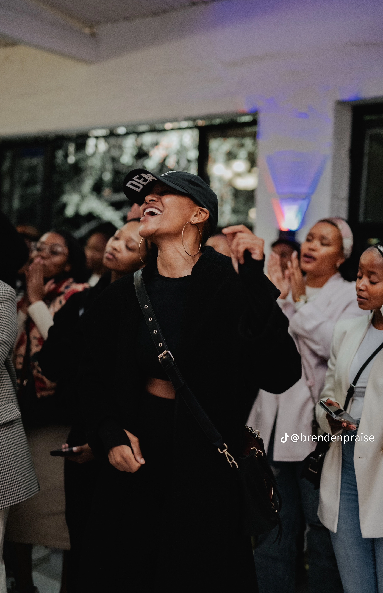
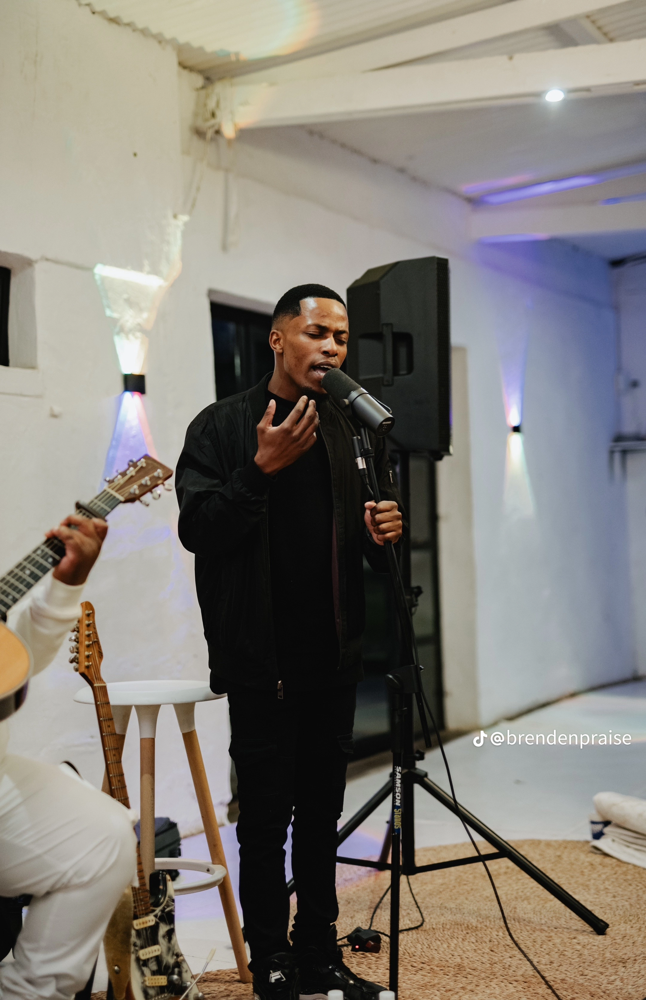
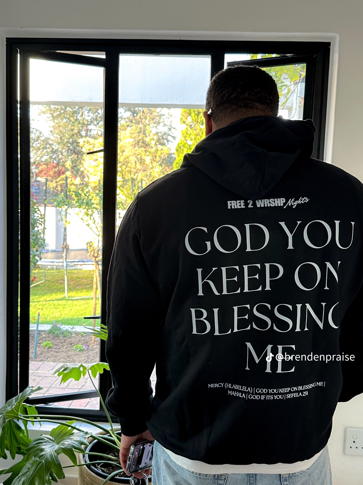
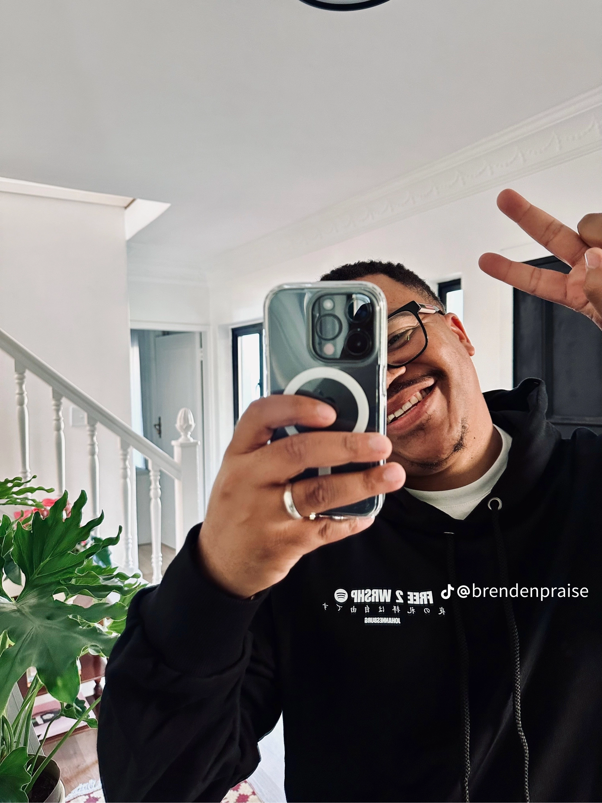
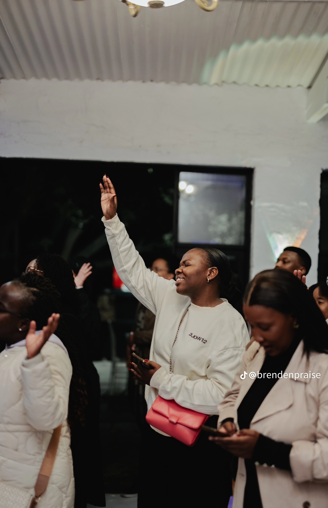
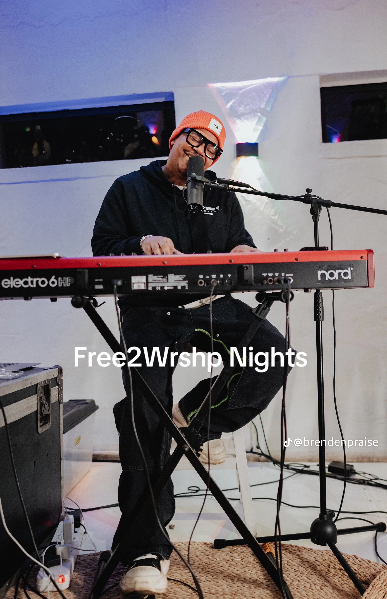
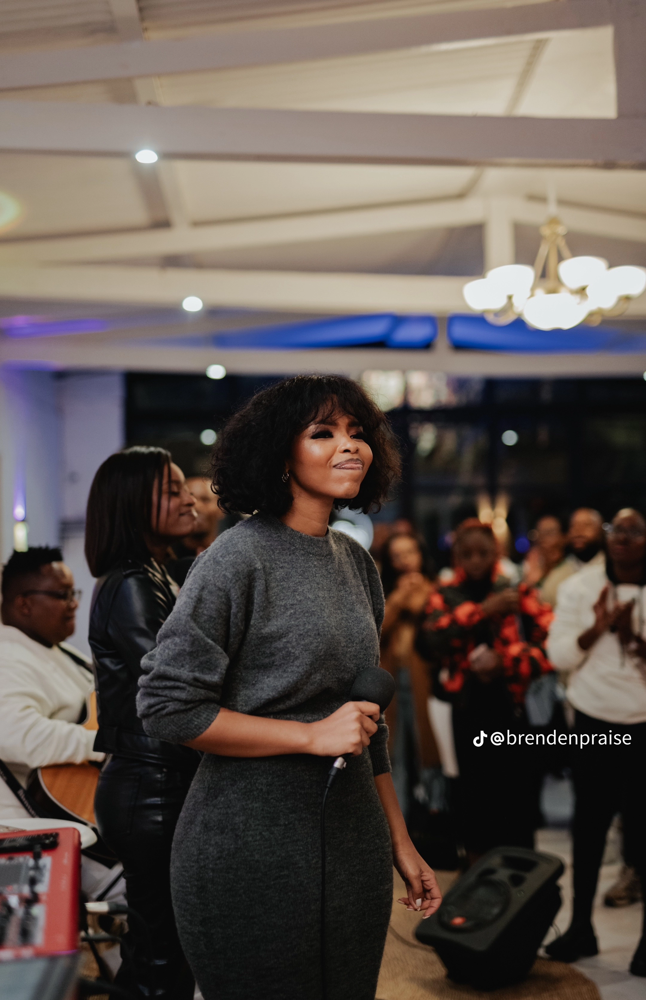

Brenden and Mpoomy recently came up with an idea to host Free2Wrshp Nights after they hit a 100K subscribers on YouTube which was one of the goals they had after Free2Wrshp was conceived, to one day host live Free2Wrshp sessions.
Free2Wrshp Nights is basically the whole Free2Wrshp family coming together to commune, have woship cell together and have some coffee as it is getting colder by the day and just connect and worship God in one accord. Their first worship night had a hundred people in honour of a 100K subbies that was held at the Fortress Venue on the 30th of May 2024.
Coffee was served, Merch was sold, a playlist was curated titled Gospel Greatness for those who could not make it and did not want feel left out. It was the best worship experience by far, very intimate and cosy,the presence of God was definitely tangible.
Free2Wrshp was partnered with Spotify to give people the best experience possible. You can now listen to Free2Wrshp sessions on Spotify when you need a little pick-me-up on your way to work,school,errands etc. It is no longer exclusive on YouTube! Isn't that exciting? Be sure to keep your eyes glued on the Wisdom & Wellness website or their social media pages for updates as to when and where the next one will be happening.
|  |  |  |
|  | ||
|  |  |  |
I am very excited to let you know that Pretoria is up! Drink your lemon and ginger water, whatever you do just make sure your voices are ready to worship God at the top of our voices because that is exactly what He deserves. Mmuso Church will be hosting this Free2Wrshp Night on the 27th of June 2024 from 19:00 - 21:00 SAST. Mmuso Church is located at Hatfield, 1250 Pretorius street to be exact. Come ready, come expectant to meet with God, tickets are now live on Howler. Can't wait to see you there! You can click on the link below to secure your tickets because tickets are limited so if I was you, I would run and not walk to website.
Free2Wrshp Nights Tickets